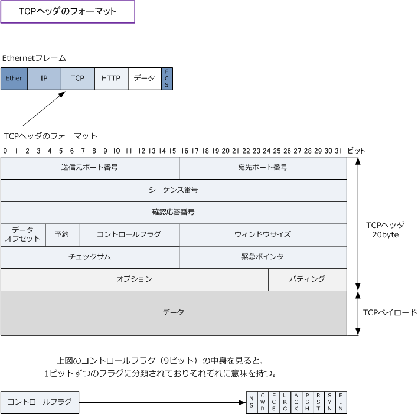

TCP header
TCPヘッダのフォーマット
TCPセグメント（TCPパケット）は以下の通り「TCPヘッダ」と「TCPペイロード」で構成されます。 TCPヘッダの中身は以下です。TCPペイロードはTCPより上位のプロトコルを含むデータのことです。

| 各フィールド | ビット数 | 各フィールドの説明 |
|---|---|---|
| 送信元ポート番号 | 16 bit | 送信元のポート番号の値。 |
| 宛先ポート番号 | 16 bit | 宛先のポート番号の値。 |
| シーケンス番号 | 32 bit | 送信したデータの順序を示す値。「相手から受信した確認応答番号」の値。 |
| 確認応答番号 | 32 bit | 確認応答番号の値。「相手から受信したシーケンス番号」＋「データサイズ」。 |
| データオフセット | 4 bit | TCPヘッダの長さを示す値。 |
| 予約 | 3 bit | 全ビット「0」が入る。将来の拡張のために用意されている。 |
| コントロールフラグ | 9 bit | NS、CWR、ECE、URG、ACK、PSH、RST、SYN、FINの9ビットで構成。 これらのビットは「 1 」の値が入る（フラグを立てる）場合に意味をなす。 |
| ウィンドウサイズ | 16 bit | 受信側が一度に受信することができるデータ量を送信側に通知するために 使用される。送信側は、この値のデータ量を超えて送信することはできない。 |
| チェックサム | 16 bit | TCPヘッダとデータ部分のエラーチェックを行うために使用される値が入る。 |
| 緊急ポインタ | 16 bit | コントロールフラグのURGの値が「1」である場合にのみ使用されるフィールド。 緊急データの開始位置を示す情報が入る。 |
| オプション | 可変長 | TCPの通信において、性能を向上させるために利用する。例えば TCPコネクションの際に、MSSを決定するために使用されたりします。 |
| パディング | 可変長 | TCPヘッダの長さを32ビットの整数にするために 詰め物(Padding)として空データの 「 0 」 の値を入れることにより調整する。 |
以下の表は、TCPヘッダのフィールドにある「コントロールフラグ」の 9 bitの詳細となります。
| コントロールフラグの詳細 | |
|---|---|
| ビット | 値が「1」である（フラグが立っている）時の意味 |
| NS | ECN-nonce 輻輳保護を示す。 |
| CWR | 輻輳制御ウィンドウ縮小（Congestion Window Reduced）を示す。 |
| ECE | ECN-Echo を示す。SYNフラグがセットされている場合、ECNが利用であることを意味する。 |
| URG (Urgent) | 緊急に処理すべきデータ含まれていることを示す。 |
| ACK (Acknowledgement) | 確認応答番号のフィールドが有効であることを示す。最初のSYN以外は常に「1」となる。 |
| PSH ( Push ) | 受信したデータをバッファリングせずに、即座にアプリケーション（上位）に渡すことを示す。 |
| RST ( Reset ) | コネクションが強制的に切断されることを示す。何らかの異常を検出した場合に送信される。 |
| SYN ( Synchronize ) | コネクションの確立を要求することを示す。 |
| FIN ( Fin ) | コネクションの正常な終了を要求することを示す。 |
これらのTCPヘッダの値はTCPの特徴である「ポート番号を使用」、「コネクションの確立、維持切断」 「順序制御」、「再送制御」、「ウィンドウ制御」、「フロー制御」で、しっかりと生かされています。